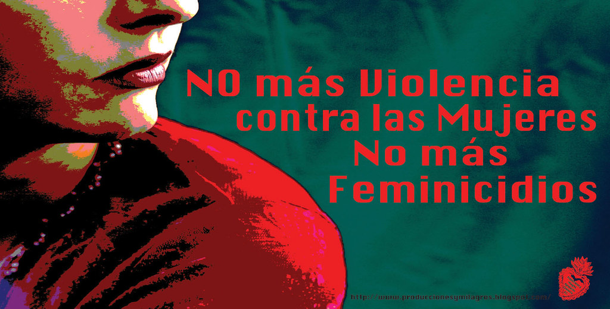

¿QUE HA PROVOCADO EL FEMINICIDIO EN LA SOCIEDAD?
El feminicidio es un grave problema social que puede considerarse un problema de salud pública. La violencia que lo precede no es un acto privado aun cuando en muchos casos se dé en el marco de la pareja o de relaciones personales.
El feminicidio se relaciona con la misoginia social e institucional, con las fallas del sistema de justicia y la impunidad. En acercamientos teóricos al feminicidio, para ir más allá del uso que le dan los medios o la tipificación como delito.
Se presentarán también algunos casos con el fin de comprender la relación entre feminicidio e impunidad y la tolerancia social a la violencia, y por último se reflexionará acerca de la experiencia de las familias de las víctimas que se han dedicado a buscar justicia.
La violencia contra la mujer puede causar problemas en la salud mental y física a largo plazo. La violencia y el abuso no solo afectan a las mujeres involucradas, sino también a sus hijos, familiares y comunidades. Estos efectos incluyen daño a la salud de la persona, posibles daños a largo plazo en los niños y daños a las comunidades como la pérdida de trabajo y la falta de hogar.
El feminicidio ha provocada muchos movimientos de marchas y protestas de mujeres las cuales ha sido un gran impacto social hacia las mujeres la cual exigen justicia hacia las victmas, con estos tipos de trabajo mutuo causan que la sociedad tomen en cuenta la causa y hecho que ocasiona el feminicidio en lo social de esta manera para que la sociedad lo tomen en cuenta y apoyen a la erradicion del feminicidio en la sociedad

| SIGUIENTE | ANTERIOR | MENU |